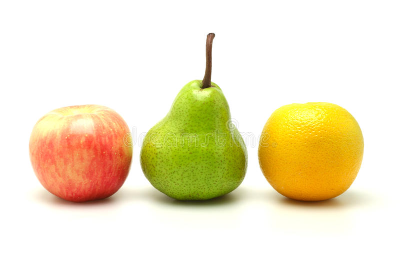

In this blog, we will deploy our model into Hugging Face Space using gradio. I have written a detailed blog here on how to deploy. This blog omits some steps.

Image of an apple, a pear, and an orange
So, we first need to install gradio.
!pip install gradio
Requirement already satisfied: gradio in /usr/local/lib/python3.9/dist-packages (3.20.0)
Requirement already satisfied: orjson in /usr/local/lib/python3.9/dist-packages (from gradio) (3.8.7)
Requirement already satisfied: altair>=4.2.0 in /usr/local/lib/python3.9/dist-packages (from gradio) (4.2.2)
Requirement already satisfied: pyyaml in /usr/lib/python3/dist-packages (from gradio) (5.3.1)
Requirement already satisfied: pycryptodome in /usr/local/lib/python3.9/dist-packages (from gradio) (3.17)
Requirement already satisfied: numpy in /usr/local/lib/python3.9/dist-packages (from gradio) (1.23.1)
Requirement already satisfied: pydantic in /usr/local/lib/python3.9/dist-packages (from gradio) (1.9.1)
Requirement already satisfied: ffmpy in /usr/local/lib/python3.9/dist-packages (from gradio) (0.3.0)
Requirement already satisfied: aiohttp in /usr/local/lib/python3.9/dist-packages (from gradio) (3.8.1)
Requirement already satisfied: pillow in /usr/local/lib/python3.9/dist-packages (from gradio) (9.2.0)
Requirement already satisfied: markdown-it-py[linkify]>=2.0.0 in /usr/local/lib/python3.9/dist-packages (from gradio) (2.2.0)
Requirement already satisfied: fastapi in /usr/local/lib/python3.9/dist-packages (from gradio) (0.92.0)
Requirement already satisfied: typing-extensions in /usr/local/lib/python3.9/dist-packages (from gradio) (4.3.0)
Requirement already satisfied: uvicorn in /usr/local/lib/python3.9/dist-packages (from gradio) (0.20.0)
Requirement already satisfied: python-multipart in /usr/local/lib/python3.9/dist-packages (from gradio) (0.0.6)
Requirement already satisfied: requests in /usr/local/lib/python3.9/dist-packages (from gradio) (2.28.1)
Requirement already satisfied: fsspec in /usr/local/lib/python3.9/dist-packages (from gradio) (2022.5.0)
Requirement already satisfied: matplotlib in /usr/local/lib/python3.9/dist-packages (from gradio) (3.5.2)
Requirement already satisfied: pandas in /usr/local/lib/python3.9/dist-packages (from gradio) (1.4.3)
Requirement already satisfied: jinja2 in /usr/local/lib/python3.9/dist-packages (from gradio) (3.1.2)
Requirement already satisfied: mdit-py-plugins<=0.3.3 in /usr/local/lib/python3.9/dist-packages (from gradio) (0.3.3)
Requirement already satisfied: httpx in /usr/local/lib/python3.9/dist-packages (from gradio) (0.23.3)
Requirement already satisfied: markupsafe in /usr/local/lib/python3.9/dist-packages (from gradio) (2.1.1)
Requirement already satisfied: websockets>=10.0 in /usr/local/lib/python3.9/dist-packages (from gradio) (10.4)
Requirement already satisfied: aiofiles in /usr/local/lib/python3.9/dist-packages (from gradio) (23.1.0)
Requirement already satisfied: pydub in /usr/local/lib/python3.9/dist-packages (from gradio) (0.25.1)
Requirement already satisfied: toolz in /usr/local/lib/python3.9/dist-packages (from altair>=4.2.0->gradio) (0.12.0)
Requirement already satisfied: entrypoints in /usr/local/lib/python3.9/dist-packages (from altair>=4.2.0->gradio) (0.4)
Requirement already satisfied: jsonschema>=3.0 in /usr/local/lib/python3.9/dist-packages (from altair>=4.2.0->gradio) (4.7.2)
Requirement already satisfied: mdurl~=0.1 in /usr/local/lib/python3.9/dist-packages (from markdown-it-py[linkify]>=2.0.0->gradio) (0.1.2)
Requirement already satisfied: linkify-it-py<3,>=1 in /usr/local/lib/python3.9/dist-packages (from markdown-it-py[linkify]>=2.0.0->gradio) (2.0.0)
Requirement already satisfied: python-dateutil>=2.8.1 in /usr/local/lib/python3.9/dist-packages (from pandas->gradio) (2.8.2)
Requirement already satisfied: pytz>=2020.1 in /usr/local/lib/python3.9/dist-packages (from pandas->gradio) (2022.1)
Requirement already satisfied: attrs>=17.3.0 in /usr/local/lib/python3.9/dist-packages (from aiohttp->gradio) (18.2.0)
Requirement already satisfied: charset-normalizer<3.0,>=2.0 in /usr/local/lib/python3.9/dist-packages (from aiohttp->gradio) (2.1.0)
Requirement already satisfied: multidict<7.0,>=4.5 in /usr/local/lib/python3.9/dist-packages (from aiohttp->gradio) (6.0.2)
Requirement already satisfied: async-timeout<5.0,>=4.0.0a3 in /usr/local/lib/python3.9/dist-packages (from aiohttp->gradio) (4.0.2)
Requirement already satisfied: frozenlist>=1.1.1 in /usr/local/lib/python3.9/dist-packages (from aiohttp->gradio) (1.3.0)
Requirement already satisfied: aiosignal>=1.1.2 in /usr/local/lib/python3.9/dist-packages (from aiohttp->gradio) (1.2.0)
Requirement already satisfied: yarl<2.0,>=1.0 in /usr/local/lib/python3.9/dist-packages (from aiohttp->gradio) (1.7.2)
Requirement already satisfied: starlette<0.26.0,>=0.25.0 in /usr/local/lib/python3.9/dist-packages (from fastapi->gradio) (0.25.0)
Requirement already satisfied: httpcore<0.17.0,>=0.15.0 in /usr/local/lib/python3.9/dist-packages (from httpx->gradio) (0.16.3)
Requirement already satisfied: rfc3986[idna2008]<2,>=1.3 in /usr/local/lib/python3.9/dist-packages (from httpx->gradio) (1.5.0)
Requirement already satisfied: certifi in /usr/lib/python3/dist-packages (from httpx->gradio) (2019.11.28)
Requirement already satisfied: sniffio in /usr/local/lib/python3.9/dist-packages (from httpx->gradio) (1.2.0)
Requirement already satisfied: pyparsing>=2.2.1 in /usr/local/lib/python3.9/dist-packages (from matplotlib->gradio) (3.0.9)
Requirement already satisfied: kiwisolver>=1.0.1 in /usr/local/lib/python3.9/dist-packages (from matplotlib->gradio) (1.4.3)
Requirement already satisfied: packaging>=20.0 in /usr/local/lib/python3.9/dist-packages (from matplotlib->gradio) (21.3)
Requirement already satisfied: fonttools>=4.22.0 in /usr/local/lib/python3.9/dist-packages (from matplotlib->gradio) (4.34.4)
Requirement already satisfied: cycler>=0.10 in /usr/local/lib/python3.9/dist-packages (from matplotlib->gradio) (0.11.0)
Requirement already satisfied: idna<4,>=2.5 in /usr/lib/python3/dist-packages (from requests->gradio) (2.8)
Requirement already satisfied: urllib3<1.27,>=1.21.1 in /usr/local/lib/python3.9/dist-packages (from requests->gradio) (1.26.10)
Requirement already satisfied: click>=7.0 in /usr/local/lib/python3.9/dist-packages (from uvicorn->gradio) (8.1.3)
Requirement already satisfied: h11>=0.8 in /usr/local/lib/python3.9/dist-packages (from uvicorn->gradio) (0.14.0)
Requirement already satisfied: anyio<5.0,>=3.0 in /usr/local/lib/python3.9/dist-packages (from httpcore<0.17.0,>=0.15.0->httpx->gradio) (3.6.1)
Requirement already satisfied: pyrsistent!=0.17.0,!=0.17.1,!=0.17.2,>=0.14.0 in /usr/local/lib/python3.9/dist-packages (from jsonschema>=3.0->altair>=4.2.0->gradio) (0.18.1)
Requirement already satisfied: uc-micro-py in /usr/local/lib/python3.9/dist-packages (from linkify-it-py<3,>=1->markdown-it-py[linkify]>=2.0.0->gradio) (1.0.1)
Requirement already satisfied: six>=1.5 in /usr/lib/python3/dist-packages (from python-dateutil>=2.8.1->pandas->gradio) (1.14.0)
WARNING: Running pip as the 'root' user can result in broken permissions and conflicting behaviour with the system package manager. It is recommended to use a virtual environment instead: https://pip.pypa.io/warnings/venv
We import fastai and gradio. We also need get_y function that we used for datablock to train our model.
And we load our learner and check if everything works the same way as it did.
learn.dls.vocab
['apple', 'orange', 'pear', 'random images']
path = Path()path.ls()
(#17) [Path('app.py'),Path('apple.jpg'),Path('random images.jpg'),Path('apple and orange.jpg'),Path('flagged'),Path('Deployment.ipynb'),Path('export.pkl'),Path('apple and pear.jpg'),Path('pear and orange.jpg'),Path('orange.jpg')...]
im = PILImage.create(path/'apple and orange.jpg')im.to_thumb(256, 256)
# AUTOGENERATED! DO NOT EDIT! File to edit: Deployment.ipynb.
# %% auto 0
__all__ = ['learn', 'categories', 'image', 'label', 'examples', 'inf', 'get_y', 'classify_images']
# %% Deployment.ipynb 2
from fastai.vision.all import *
import gradio as gr
def get_y(path):
return parent_label(path).split(' and ')
# %% Deployment.ipynb 3
learn = load_learner('export.pkl')
# %% Deployment.ipynb 8
categories = learn.dls.vocab
def classify_images(img):
"""classifies images and returns the probabilities on each categories."""
pred, pred_idx, probs = learn.predict(img)
return dict(zip(categories, map(float, probs)))
# %% Deployment.ipynb 10
image = gr.inputs.Image(shape=(192, 192))
label = gr.outputs.Label()
# If you have more or less examples, edit this list.
examples = ['apple.jpg', 'orange.jpg', 'apple and orange.jpg',
'pear and orange.jpg', 'apple and pear.jpg', 'apple and pear and orange.jpg',
'random images.jpg']
inf = gr.Interface(fn=classify_images, inputs=image, outputs=label, examples=examples)
inf.launch(inline=False)
That’s it. To find out next steps, check out my detailed blog after nbdev. It goes over creating a requirements.txt file and uploading files into Hugging Face Space using git.